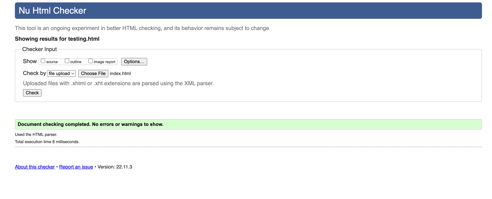
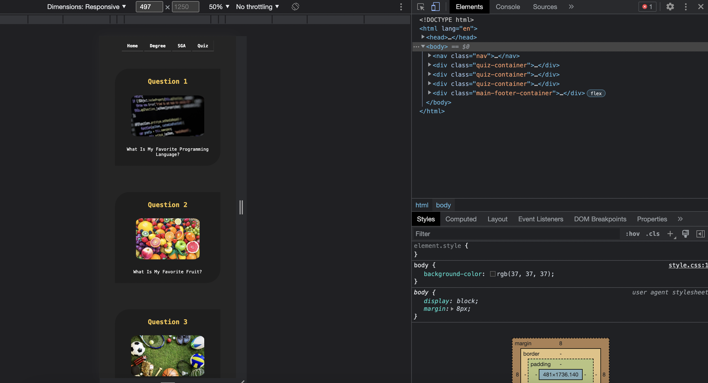

I have considered optimizing my site's loading time by using images that don't have a large file size. I used this website to compress images to a size smaller than 1MB. I also did not consider using video files as they are too large in size and will slow the page.
I ran an html validator on all 9 pages that I created and received no errors.
For browsing testing, I used the chrome devtools to resize my browser and check my websites responsiveness. I also used the chrome devtools to view elements styling.
The World Wide Fund for Nature (WWF) is an international organization working on issues regarding the conservation, research and restoration of the environment, formerly named the World Wildlife Fund. WWF was founded in 1961.